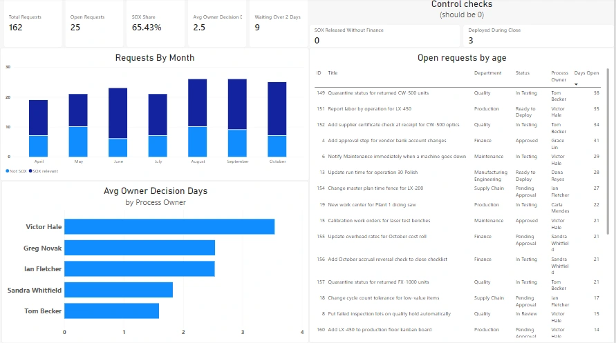
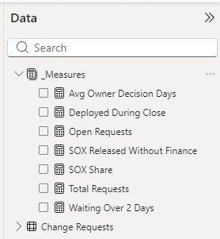
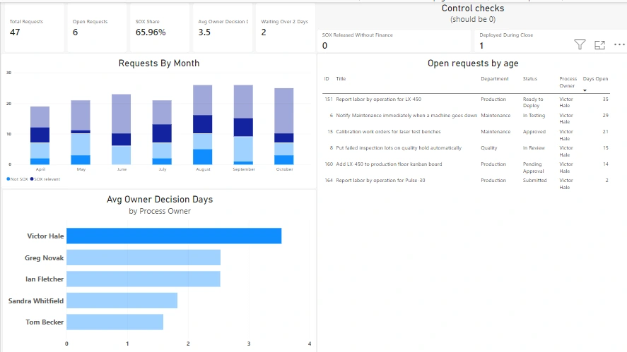

Power BI · DAX · SharePoint data · Lumen Photonics lab
Approach highlighted
Reporting that proves the controls work. Alongside the usual volume and aging numbers, the dashboard measures the controls themselves, so a zero on screen is evidence an auditor can use, and every visual answers a question someone at Lumen actually asks.
Project Summary
The change request process records every submission, decision and deployment in a SharePoint list. This Power BI report turns that history into one page for three audiences: Business Systems running the weekly change review, operations leaders who own approvals, and Finance and Internal Audit checking SOX controls before each month-end close.

The Data
The report connects to the Change Requests list with the SharePoint Online connector. In Power Query, only the 23 columns the report needs are kept, people and lookup columns are expanded to display names, and dates are typed so they can be grouped by month. Seven months of history (138 requests from April to October) were generated to be realistic and loaded through the same solution-aware migration flow used for the original legacy tracker, with the enforcement and approval flows switched off during the load so history wasn't overwritten.
Measures, Kept in One Place
All measures live in a dedicated measures table, so the model stays readable and report authors find every calculation in one spot. Two of them are control checks that should always be zero.

Avg Owner Decision Days =
AVERAGEX (
FILTER ( 'Change Requests', NOT ISBLANK ( 'Change Requests'[Process Owner Decision Date] ) ),
CONVERT ( 'Change Requests'[Process Owner Decision Date] - 'Change Requests'[Submitted On], DOUBLE )
)
// Control check: SOX-relevant changes that moved forward without financial approval
SOX Released Without Finance =
CALCULATE (
[Total Requests],
'Change Requests'[SOX Relevant] = TRUE (),
'Change Requests'[Status] IN { "Approved", "In Testing", "Ready to Deploy", "Deployed", "Closed" },
'Change Requests'[Financial Decision] <> "Approved"
) + 0
// Control check: deployments during month-end close (last days and first days of the month)
Deployed During Close =
COUNTROWS (
FILTER (
'Change Requests',
NOT ISBLANK ( 'Change Requests'[Deployed On] )
&& ( DAY ( 'Change Requests'[Deployed On] ) >= 28 || DAY ( 'Change Requests'[Deployed On] ) <= 6 )
)
)Two calculated columns support the visuals: a readable SOX label for the chart legend, and Days Open, which counts days since submission for requests that aren't finished. They live in the report rather than the SharePoint list, because they're derived and Days Open changes every day.
How It's Used

What the Data Shows
What I'd Add Next
A financial decision date column, so finance turnaround can be measured the same way as process owner turnaround, and publishing to the Power BI service with scheduled refresh, which needs a Power BI Pro license the lab doesn't have.
Skills Demonstrated
Power BI Desktop, the SharePoint Online connector, Power Query shaping, DAX measures and calculated columns, a dedicated measures table, visual-level filters, cross-filtering, report design for specific audiences, realistic test data generation, and turning control requirements into measurable checks.
More from the Lumen Photonics lab